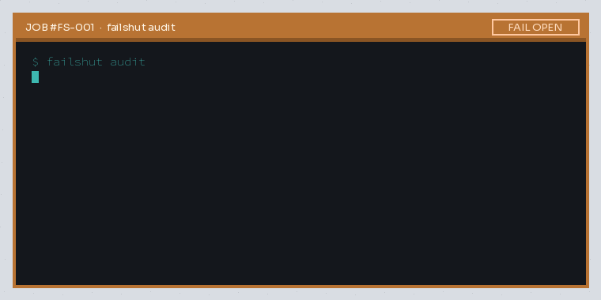

FAILSHUT — LEAK CHECK
BAY 01 · SERVICE TAG
Hang this on your toolbox
curl -sL …/v0.1.0/failshut_0.1.0_linux_amd64.tar.gz
| tar xz && ./failshut auditor
go install github.com/Blackman99/failshut/cmd/failshut@latestExit 1 on any FAIL OPEN · 0 if sealed or nothing configured.
BAY 02 · SIX LEAK POINTS
Each finding is a joint on the manifold
Tap a fitting. Bubbles mark shapes the harness is known to ignore — dry means the static check is sealed.
v0.1 is a static auditor — it does not intercept live tool calls. See docs.
BAY 03 · WORK ORDER
FAIL OPEN — 1 finding(s)
where policy may not hold:
[1] hook-missing (claude-code)
file: ~/app/.claude/settings.json
evidence:
PreToolUse command
"$CLAUDE_PROJECT_DIR"/.claude/
hooks/block-src-writes.sh
— missing
fix: Restore the hook script.
A hook that cannot start
lets the tool call through.
Summary: 1 FAIL OPEN
· 5 FAIL SHUT checks
· 1 config(s)
BAY 04 · OPEN TICKETS
Why the soap test exists
Fresh reports keep landing where policy says one thing and runtime does another. Not every ticket is config-detectable — the coverage table says which ones v0.1 catches.
- claude-code#32990hook script deleted, edits ran
- claude-code#102649hooks dir vanished, guards off
- opencode#55728deny ignored
- opencode#55909
..loads sibling config - opencode#55814plan-mode escalate via subagent
- codex#54298Ask vs sandbox_approval
- codex#54440require_escalated silent sandbox
- codex#54448delegation drops named profile
- claude-code#102582hook asked, desktop auto-allowed